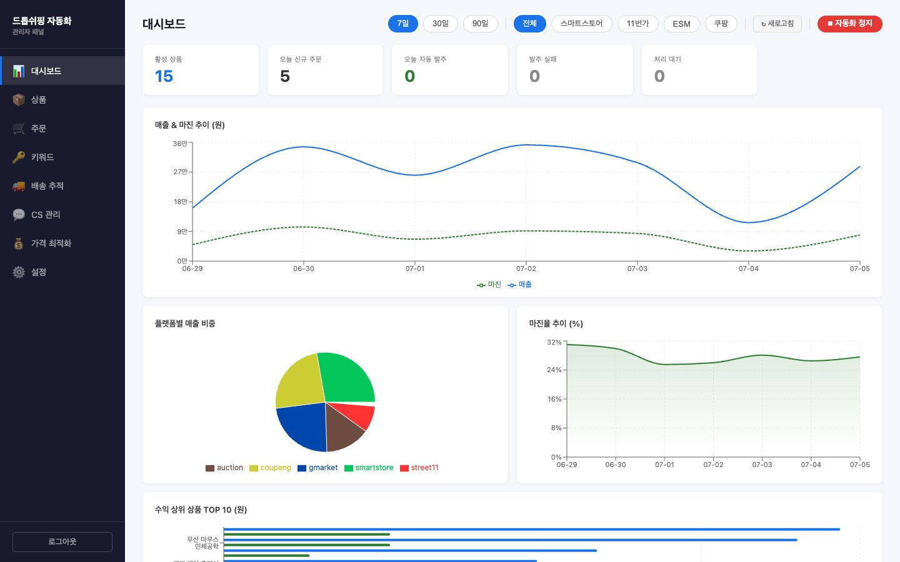
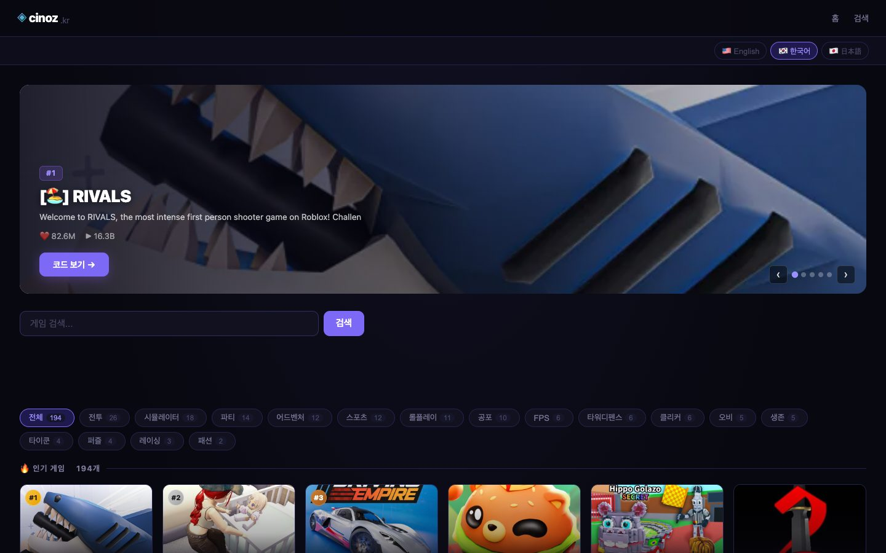
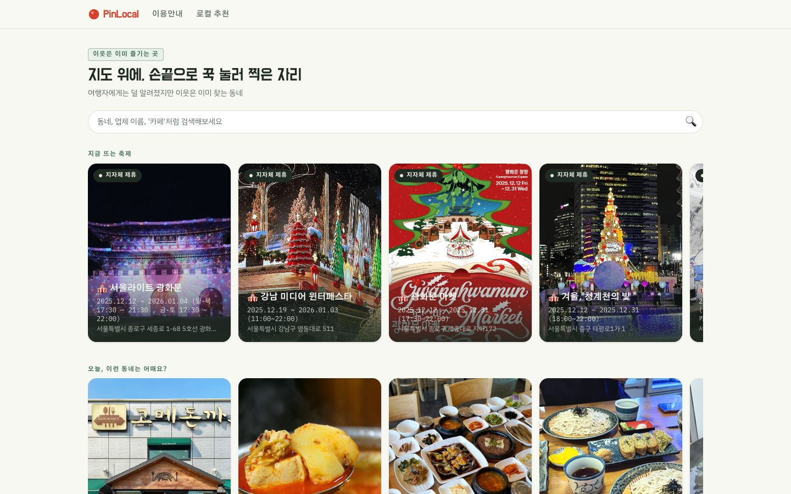
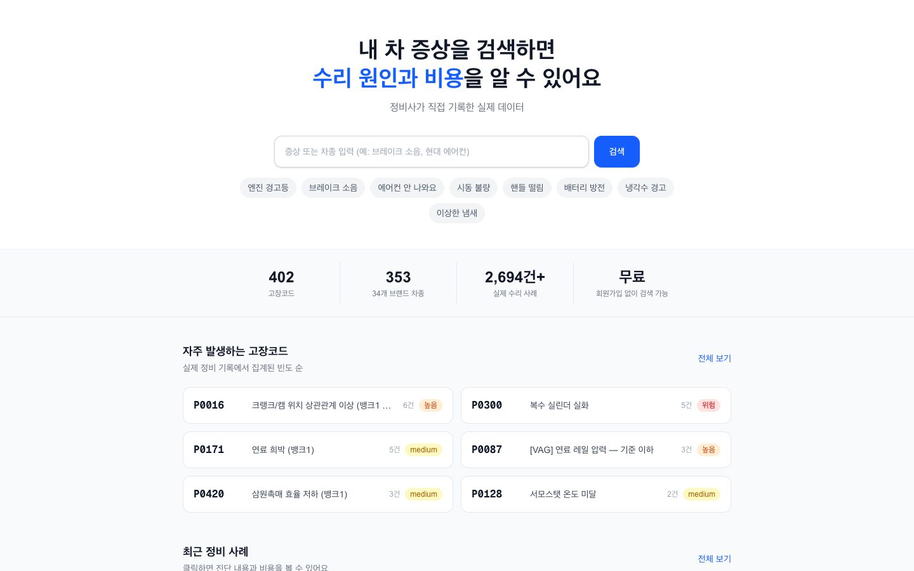
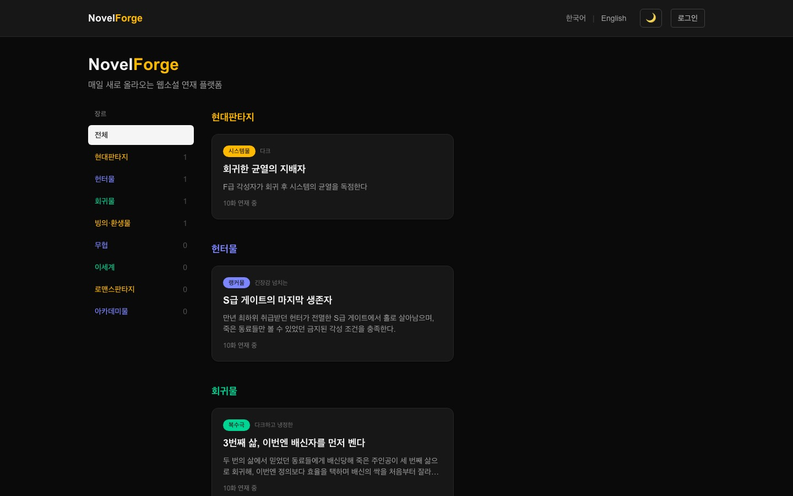
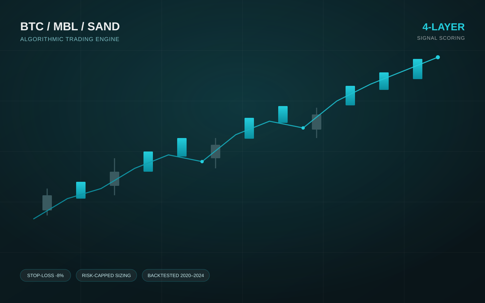
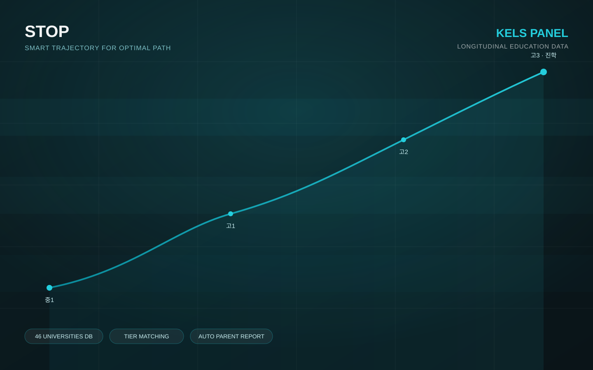

E-commerce Automation · AliExpress → 국내 마켓 무인 자동화
해외 소싱부터 국내 판매까지 전 과정을 자동화한 자체 운영 이커머스 플랫폼입니다. 상품 랭킹 알고리즘으로 소싱 대상을 선별하고, 스마트스토어·11번가·G마켓·옥션·쿠팡 등 국내 주요 마켓플레이스에 자동 등록합니다. 주문 접수부터 발주, 배송 추적, 마진 계산, 가격 최적화, 이상 감지까지 사람 개입 없이 24시간 운영되며, 저희가 직접 겪은 실제 이커머스 운영 경험을 바탕으로 고객사의 이커머스 자동화 프로젝트에도 그대로 적용하고 있습니다.

Gaming Content Media · 로블록스 인기 게임 코드·정보 사이트
로블록스 인기 게임의 최신 코드와 정보를 한국어·영어·일본어 3개 언어로 제공하는 콘텐츠 미디어 서비스입니다. 매시간 자동으로 실행되는 수집 파이프라인이 신규 게임 발굴, 코드 갱신, 썸네일·장르 정보 보강까지 자동으로 처리하며, 광고 수익화 모델을 자체적으로 설계·운영하고 있습니다.

Public-Data Platform · 지역 상권 데이터 분석 서비스
여행자에게는 덜 알려졌지만 실제로는 이웃들이 즐겨 찾는 동네 상권("로컬 시크릿")을 발굴하는 공공데이터 기반 플랫폼입니다. 관광·상권·인허가 등 여러 공공데이터를 교차분석하는 자체 개발 알고리즘으로 다양성·밀집도·영업지속성·유입지수를 계산해 숨은 동네를 점수화하고, 지도 기반으로 추천 코스까지 자동 생성합니다.

Vertical Information Platform · 정비사 실제 작업기록 기반 DB
정비사가 직접 기록한 실제 수리 사례와 400개 이상의 고장코드 데이터베이스를 기반으로 한 자동차 정비 정보 플랫폼입니다. 차종·세대·트림별 정비 규격, 고장코드별 실제 수리 사례 연결, 정비사 포트폴리오와 정비소 대시보드, Q&A 커뮤니티까지 하나의 서비스 안에서 통합 제공합니다.

Web Novel Platform · 자동 생성 파이프라인 기반 매일 연재 서비스
캐릭터·세계관·복선을 데이터베이스로 관리해 일관성을 지키면서 씬 단위로 소설을 자동 생성하는 웹소설 연재 플랫폼입니다. 분량·반복·시점·설정 모순 등을 규칙 기반으로 검증하는 품질 게이트를 통과한 원고만 관리자 승인을 거쳐 발행되며, 현대판타지·헌터물·회귀물·무협·이세계·로맨스판타지 등 다양한 장르를 동시에 연재합니다.

Algorithmic Trading System · 다중 레이어 신호 기반 업비트 자동매매
고래 동향·거시경제·중기 모멘텀·실시간 심리를 종합하는 4레이어 신호 엔진으로 진입·청산을 판단하는 자동매매 시스템입니다. 2020~2024년 실데이터로 백테스트 검증을 마쳤으며, 손절·포지션 사이징·코인별 자본 한도를 코드 레벨에서 강제하는 리스크 관리 엔진을 함께 운영합니다. 비트코인 전용 신호 외에도 가격·거래량·시장심리 기반의 별도 신호 엔진을 얹어 알트코인까지 독립 프로세스로 동시 운영합니다.

Education Consulting Platform · 국가 승인 종단연구 데이터 기반 진로 설계 툴
국가 공인 한국교육종단연구(KELS/KEDI) 패널 데이터를 기반으로 학생의 성적 궤적을 분석하고 진로를 설계하는 학원 전용 컨설팅 플랫폼입니다. 중1 실력 데이터부터 고3까지 이어지는 장기 추세로 미래 성적과 진학 확률을 예측하고, 실제 대학 53개교의 공식 입시결과와 비교해 안정·적정·도전권 학과를 매칭합니다. 상담 현장에서 바로 활용할 수 있는 학부모 리포트(인쇄·이메일)까지 자동으로 생성합니다.